Chapter 4: Linux in Depth¶
Linux runs most of the world's servers, clouds, containers, phones and supercomputers, so it is the operating system you are most likely to manage in a job. This chapter tours the 2026 distribution landscape, the filesystem hierarchy, users, permissions, sudo and capabilities, package managers, systemd and the boot chain, shell scripting and the classic text tools. It then covers process and network administration, /proc, /sys and kernel modules, eBPF observability, performance analysis, and how the kernel itself is developed and released.
4.1 Linux Distributions & Families in 2026¶
Linux itself is only a kernel. A distribution ('distro') bundles that kernel with tools, libraries, a package manager, an installer, default settings and a support policy. Most distros belong to a few families — Red Hat, Debian and SUSE — plus independent ones such as Arch, Alpine and NixOS, and the family decides which commands and package formats you use.
Think of it like…
The kernel is a car engine; distributions are finished cars from different makers — a reliable saloon with a 10-year warranty (RHEL, Ubuntu LTS), a test car with the newest parts (Fedora, Arch), or a tiny city car (Alpine).
Real-world example
Leila joins fictional Meridian Bank's platform team. Production databases run RHEL 10 under a 10-year support contract, the CI runners use Ubuntu 26.04 LTS, containers are built on Alpine and Debian slim images, developers use Fedora 44 laptops, and a dev team trials NixOS for reproducible build machines. She learns dnf, apt and apk in her first week.
How it works¶
- Upstream projects (kernel, systemd, GNOME, OpenSSL...) release source code.
- A distribution packages, patches and tests them together, choosing versions and defaults.
- Releases are fixed (point releases with long support) or rolling (continuous updates).
- Security teams backport fixes into the shipped versions for the support period.
- Users install from images and keep systems current through the distro's repositories.
Who uses it
Every Linux administrator, DevOps engineer, cloud engineer and developer must pick and support distributions; job adverts often name RHEL or Ubuntu specifically.
Key takeaway
Learn one distro from each big family — RHEL-like (dnf, SELinux) and Debian/Ubuntu (apt, AppArmor) — because certifications (RHCSA) and most jobs assume one of them.
Going deeper
- RHEL 10 shipped in May 2025 on Linux 6.12 and requires x86-64-v3 CPUs (roughly Intel Haswell or newer); RHEL 10.2 and 9.8 followed on 20 May 2026, and each major RHEL release gets 10 years of maintenance.
- Since June 2023 Red Hat publishes RHEL sources mainly through CentOS Stream; AlmaLinux now aims for ABI compatibility, and CIQ, Oracle and SUSE formed the OpenELA project to share enterprise Linux sources.
- Debian 13 'Trixie' (August 2025) is current stable, with point release 13.7 in September 2026 and LTS until June 2030; Debian 14 'Forky' is in testing.
- Ubuntu 26.04 LTS 'Resolute Raccoon' (23 April 2026) ships Linux 7.0, uses Rust-based sudo-rs and uutils coreutils by default, and gets 5 years of standard support, extended to 10 years with Ubuntu Pro.
- SUSE Linux Enterprise Server 16.0 (November 2025) and openSUSE Leap 16.0 introduced the web-based Agama installer and switched the default security module from AppArmor to SELinux.
- Fedora releases roughly every six months with about 13 months of support; Fedora 44 arrived in spring 2026 and Fedora 45, targeted for late October 2026, uses Linux 7.2.
- Alpine uses musl libc and BusyBox instead of glibc and GNU coreutils, so its base container image is only a few megabytes but some glibc-only binaries will not run on it.
Common mistakes & misconceptions
- Saying 'CentOS' for a new server: CentOS Linux 7 ended in June 2024; choose Rocky, AlmaLinux, CentOS Stream or RHEL itself.
- Running interim (non-LTS) Ubuntu releases in production: they get only 9 months of support; servers should use LTS releases.
- Assuming every distro has the same tools: package managers, firewalls, network config and security modules differ between families.
Try it: Identify your distribution and kernel¶
cat /etc/os-release
uname -r # running kernel version
hostnamectl # OS, kernel and architecture on systemd systems
Key kernels, commands, tools, standards & concepts¶
| Name | What it does | Example |
|---|---|---|
| Red Hat Enterprise Linux (RHEL) Red Hat (IBM) · Operating system · Current · Beginner |
The leading commercial enterprise distro: 10-year lifecycle, certified hardware and software, SELinux and dnf. Current major version: RHEL 10. | A hospital runs its electronic records system on RHEL 9.8 because the vendor certifies only RHEL. |
| CentOS Stream CentOS Project (Red Hat-sponsored) · Operating system · Current · Intermediate |
The continuously delivered distro sitting just ahead of the next RHEL minor release; Red Hat develops RHEL in the open here. | An ISV tests its agent on CentOS Stream 10 to catch problems before the next RHEL 10 minor release. |
| Fedora Linux Fedora Project (Red Hat-sponsored) · Operating system · Current · Beginner |
Fast-moving community distro with the latest desktop and kernel; upstream of CentOS Stream and RHEL. | A developer runs Fedora Workstation 44 to get the newest GNOME, Podman and Python. |
| Rocky Linux Rocky Enterprise Software Foundation (CIQ-backed) · Operating system · Current · Beginner |
Free, community RHEL-compatible distribution created after CentOS Linux changed course in 2020. | A university swaps 300 CentOS 7 servers for Rocky Linux 9 to keep RHEL compatibility without licence fees. |
| AlmaLinux OS AlmaLinux OS Foundation · Operating system · Current · Beginner |
Free RHEL-compatible distribution aiming for ABI compatibility; AlmaLinux 10 also builds for older x86-64-v2 CPUs. | A web host moves to AlmaLinux 10 and keeps using its older Xeon servers thanks to the x86-64-v2 build. |
| Oracle Linux Oracle · Operating system · Current · Intermediate |
RHEL-compatible distro offered free to download, with Oracle's Unbreakable Enterprise Kernel (UEK) as an option. | An Oracle Database team uses Oracle Linux 9 with UEK and Ksplice live patching. |
| Debian Debian Project (volunteers) · Operating system · Current · Beginner |
Large, community-run universal distribution known for stability and strict free-software rules; base of Ubuntu and many others. | A non-profit runs its mail and web servers on Debian 13 'Trixie' with unattended security updates. |
| Ubuntu LTS Canonical · Operating system · Current · Beginner |
Popular Debian-based distro; Long Term Support releases come every two years in April (24.04, 26.04). | Most cloud VMs at a start-up launch from the Ubuntu 26.04 LTS image on AWS, Azure and Google Cloud. |
| Linux Mint Linux Mint team · Operating system · Current · Beginner |
Beginner-friendly desktop distribution based on Ubuntu LTS, known for its Cinnamon desktop. | A school replaces unsupported Windows 10 PCs with Linux Mint so they remain secure. |
| SUSE Linux Enterprise Server (SLES) SUSE · Operating system · Current · Intermediate |
Enterprise distro strong in SAP and mainframe deployments; SLES 16 uses the Agama installer and SELinux by default. | A manufacturer runs SAP S/4HANA on SLES for SAP Applications. |
| openSUSE Leap and Tumbleweed openSUSE Project · Operating system · Current · Intermediate |
Leap is the stable release built from SLES sources; Tumbleweed is a tested rolling release. | A sysadmin learns zypper and snapper on openSUSE Leap 16 before managing SLES at work. |
| Arch Linux Arch Linux community · Operating system · Current · Intermediate |
Minimal rolling-release distro built by the user from the ground up, with pacman, the AUR and an excellent wiki. | Valve's SteamOS 3 on the Steam Deck is based on Arch Linux. |
| Alpine Linux Alpine Linux community · Operating system · Current · Intermediate |
Tiny security-focused distro built on musl libc, BusyBox and OpenRC, hugely popular as a container base image. | FROM alpine plus apk add --no-cache curl produces a container image under 15 MB. |
| NixOS NixOS Foundation / community · Operating system · Emerging · Advanced |
Distro configured entirely by a declarative file; every change creates a new generation you can roll back to. | A research lab defines every workstation in configuration.nix so machines rebuild identically. |
| Amazon Linux 2023 Amazon Web Services · Operating system · Current · Intermediate |
AWS's own distro for EC2 and containers, derived from Fedora, with a predictable release and support schedule. | A team migrates Lambda container images and EC2 hosts from Amazon Linux 2 to Amazon Linux 2023. |
| Image-based (atomic) distros Fedora Atomic/bootc, Ubuntu Core, openSUSE MicroOS, SteamOS · Concept · Emerging · Intermediate |
The OS is delivered as a read-only image updated atomically, with instant rollback to the previous version. | A kiosk fleet runs Fedora IoT; a failed update simply boots the previous image automatically. |
4.2 The Filesystem Hierarchy & 'Everything Is a File'¶
Linux has one directory tree starting at / (root), with no drive letters. The Filesystem Hierarchy Standard (FHS) says what belongs where: programs in /usr, settings in /etc, changing data in /var, users' files in /home. Linux also follows the Unix idea that 'everything is a file': disks, terminals, processes and kernel settings all appear as files you can read and write.
Think of it like…
The tree is like a well-organised office building: reception (/), the policy binders (/etc), the warehouse of tools (/usr), the mail room that fills and empties daily (/var) and private offices (/home).
Real-world example
Oliver, a new support engineer at fictional Tidewater Telecom, must find why a web server will not start. He knows where to look without searching: configuration in /etc/nginx, logs in /var/log/nginx, the binary in /usr/sbin/nginx, the service unit in /usr/lib/systemd/system, and its runtime PID file in /run/nginx.pid.
How it works¶
- The kernel mounts the root file system at / during boot.
- Other file systems (/boot, /home, USB drives) are mounted onto directories in that tree.
- Virtual file systems are mounted too: /proc (processes), /sys (devices), /dev (device nodes), /run (runtime tmpfs).
- Programs find their files using standard paths, so packages and admins agree where things live.
- Ordinary tools — cat, echo, ls — work on all of it because everything is presented as files.
Who uses it
All Linux users, administrators and developers; packagers and container image builders follow FHS closely.
Key takeaway
Remember the three big ones: /etc = configuration, /var = variable data (logs, caches, spools, databases), /usr = installed, read-only software.
Going deeper
- FHS 3.0 was published by the Linux Foundation in 2015; distributions follow it closely but not perfectly, and man 7 hier and man 7 file-hierarchy describe each system's actual layout.
- Most distributions have completed the '/usr merge': /bin, /sbin and /lib are symlinks into /usr, so the whole OS can live on one read-only /usr volume (Fedora since 17, Debian since 12).
- /run is a tmpfs created at every boot for PID files, sockets and lock files; it replaced /var/run, which is now a symlink to it.
- /tmp may be a tmpfs in RAM (the default on Fedora, Arch and since Debian 13) and is often cleaned at boot, while /var/tmp is meant to survive reboots.
- Device files in /dev are character or block nodes with major and minor numbers, created dynamically by devtmpfs and udev; /dev/null, /dev/zero and /dev/urandom are pseudo-devices.
- Image-based and container systems lean on FHS: /usr is the read-only OS image, while /etc and /var hold the machine's own state.
Common mistakes & misconceptions
- Storing important data in /tmp: it may be in RAM or wiped at boot; use /var/lib/<app> or /srv.
- Editing files under /usr/lib (for example systemd units) directly: package updates overwrite them; put overrides in /etc.
- Thinking /root and / are the same: / is the top of the tree, /root is the root user's home directory.
Try it: Explore the hierarchy and 'everything is a file'¶
ls /
man hier # the hierarchy explained
ls -l /bin # a symlink to usr/bin on merged-/usr systems
cat /proc/cpuinfo | head -5 # CPU details as a file
echo $$ ; ls /proc/$$ # your shell as a directory
Key kernels, commands, tools, standards & concepts¶
| Name | What it does | Example |
|---|---|---|
| Filesystem Hierarchy Standard (FHS) Linux Foundation (FHS 3.0, 2015) · Standard · Current · Beginner |
Specification defining the purpose of standard directories on Linux and other Unix-like systems. | A packager installs config to /etc/myapp and data to /var/lib/myapp, as FHS expects. |
| 'Everything is a file' Unix design philosophy (1970s) · Concept · Beginner |
Devices, pipes, sockets, processes and kernel settings are exposed as files, so the same tools work everywhere. | cat /sys/class/power_supply/BAT0/capacity prints the laptop battery percentage. |
| /etc FHS · Concept · Beginner |
Host-specific configuration files: users, network, services and application settings, mostly plain text. | Editing /etc/ssh/sshd_config and reloading sshd changes which users may log in. |
| /usr and the /usr merge FHS; freedesktop.org · Concept · Intermediate |
Shareable, read-only programs and libraries; on merged systems /bin, /sbin and /lib point into /usr. | ls -l / shows bin -> usr/bin on Ubuntu 26.04 and Fedora. |
| /var FHS · Concept · Beginner |
Variable data that changes while running: logs, spools, caches, databases and package state. | /var/log fills the disk after a debug flag is left on, so logrotate settings get fixed. |
| /home and /root FHS · Concept · Beginner |
Users' personal directories, and the separate home directory of the root user. | Putting /home on its own partition lets a reinstall keep everyone's files. |
| /boot and /boot/efi FHS; UEFI · Concept · Intermediate |
Kernel images, initramfs and boot-loader files; the EFI System Partition is usually mounted at /boot/efi or /efi. | A full /boot (old kernels piling up) makes kernel updates fail until old ones are removed. |
| /dev Linux devtmpfs + udev · Concept · Intermediate |
Device nodes for disks, terminals and pseudo-devices, created automatically as hardware appears. | dd if=/dev/zero of=test.img bs=1M count=100 creates a 100 MB file of zeros. |
| /proc Linux kernel procfs · File system · Current · Intermediate |
Virtual file system exposing processes (/proc/<pid>) and kernel information as files generated on demand. | cat /proc/loadavg prints the 1-, 5- and 15-minute load averages. |
| /sys Linux kernel sysfs · File system · Current · Intermediate |
Virtual file system exposing devices, drivers and kernel objects with one value per file. | cat /sys/block/sda/queue/rotational prints 1 for a spinning disk and 0 for an SSD. |
| /run FHS 3.0; Linux tmpfs · Concept · Intermediate |
RAM-backed directory for runtime data — PID files, sockets, locks — recreated at each boot. | /run/user/1000 holds a logged-in user's runtime files, including the D-Bus socket. |
| /tmp and /var/tmp FHS · Concept · Beginner |
Temporary files: /tmp may be RAM-backed and cleared at boot; /var/tmp persists across reboots. | systemd-tmpfiles deletes files in /tmp older than 10 days on many distributions. |
| /opt, /srv and /usr/local FHS · Concept · Intermediate |
Places for add-on vendor software (/opt), data served by the system (/srv) and locally built software (/usr/local). | Google Chrome installs into /opt/google/chrome; a hand-compiled tool goes to /usr/local/bin. |
| /mnt and /media FHS · Concept · Beginner |
Mount points: /mnt for temporary manual mounts, /media (or /run/media) for removable drives. | Plugging in a USB stick on Fedora mounts it at /run/media/alex/USBSTICK. |
| Special files: /dev/null, /dev/zero, /dev/urandom Unix pseudo-devices · Concept · Beginner |
/dev/null discards everything, /dev/zero produces zeros and /dev/urandom produces cryptographically secure random bytes. | cron jobs end with > /dev/null 2>&1 to discard their output. |
4.3 Users, Groups, Permissions & ACLs¶
Linux is multi-user: every process runs as a user, and every file has an owner, a group and permission bits saying who may read (r), write (w) or execute (x) it. Permissions are checked separately for the owner, the group and everyone else. Access control lists (ACLs) add finer rules when three categories are not enough.
What r, w and x mean on files vs directories
| On a file | On a directory | |
|---|---|---|
| r (4) | Read contents | List names (ls) |
| w (2) | Modify contents | Create, delete, rename entries |
| x (1) | Run as program | Enter (cd) and access entries |
| setgid (2000) | Run with file's group | New files inherit group |
| sticky (1000) | (ignored on Linux) | Only owner may delete (/tmp) |
On a directory, x means 'may enter', and w lets you delete other people's files unless the sticky bit is set.
Think of it like…
Each file is a room with three keyholes: one for its owner, one for members of a team, and one for visitors; ACLs are a guest list pinned on the door naming extra people.
Real-world example
At fictional Quarry Design, Ana creates a shared folder /srv/projects owned by group 'design' with mode 2770, so only the team can enter and new files inherit the group. A contractor, Ben, needs read-only access to one subfolder, so she adds an ACL: setfacl -m u:ben:rx /srv/projects/brochure — no group changes needed.
How it works¶
- Each account has a numeric UID and a primary GID, defined in /etc/passwd and /etc/group (or a directory such as LDAP/FreeIPA).
- When a process opens a file, the kernel compares the process's UID and groups with the file's owner and group.
- It applies the first matching class — owner, then group, then others — and checks the r, w or x bit for that class.
- If the file has an ACL, named-user and named-group entries are checked too, limited by the ACL mask.
- Root (UID 0) bypasses most checks, which is why administrators avoid working as root.
Who uses it
Every Linux administrator, DevOps engineer and security analyst; permission problems are among the most common support tickets.
Key takeaway
Know octal by heart: r=4, w=2, x=1, so 644 = rw-r--r-- (files), 755 = rwxr-xr-x (programs, directories), 600 = rw------- (private keys).
Going deeper
- Account data lives in /etc/passwd (name, UID, GID, home, shell), /etc/shadow (password hashes, readable only by root) and /etc/group; getent passwd also queries LDAP or SSSD sources through NSS.
- Modern distributions hash passwords with yescrypt (shadow entries starting $y$) or SHA-512 ($6$); older MD5 ($1$) hashes are weak and should be replaced.
- Regular users typically start at UID 1000; UIDs below that are reserved for system accounts that run services and usually have /usr/sbin/nologin as their shell.
- The umask removes permissions from newly created files: with umask 022 new files get 644 and directories 755; 027 makes new files 640.
- POSIX ACLs (getfacl/setfacl) add named users and groups plus a mask; default ACLs on directories are inherited by new files, and ls -l shows a '+' after the mode.
- Enterprise systems usually keep users in a central directory — FreeIPA/IdM, Active Directory via SSSD or Samba winbind — instead of local files.
Common mistakes & misconceptions
- Using chmod 777 to 'fix' access: it lets anyone modify or replace the file; find the correct owner, group or ACL instead.
- Forgetting x on directories: a readable file inside a directory without x for you is still inaccessible.
- Editing /etc/passwd or /etc/sudoers with a normal editor: use vipw, vigr and visudo, which lock and syntax-check the files.
Try it: Practise permissions safely in a temporary folder¶
cd "$(mktemp -d)"
touch notes.txt; ls -l notes.txt
chmod 640 notes.txt; ls -l notes.txt # rw-r-----
chmod u+x,o-r notes.txt; stat -c '%A %a %U:%G' notes.txt
id; umask
getfacl notes.txt
Key kernels, commands, tools, standards & concepts¶
| Name | What it does | Example |
|---|---|---|
| UID and GID POSIX · Concept · Beginner |
Numeric user and group identifiers the kernel actually checks; names are just labels mapped to these numbers. | id alex prints uid=1001(alex) gid=1001(alex) groups=1001(alex),27(sudo). |
| /etc/passwd, /etc/shadow, /etc/group Unix account database files · Concept · Current · Beginner |
Text files listing accounts, password hashes (root-only) and groups with their members. | grep alex /etc/passwd shows alex:x:1001:1001:Alex:/home/alex:/bin/bash. |
| useradd, usermod, userdel, passwd shadow-utils · Command · Current · Beginner |
Commands to create, modify and delete accounts and set passwords. | sudo useradd -m -s /bin/bash -G developers priya creates priya with a home directory and a supplementary group. |
| Primary and supplementary groups POSIX · Concept · Beginner |
A user has one primary group (used for new files) and any number of supplementary groups granting shared access. | sudo usermod -aG docker sam adds sam to the docker group; forgetting -a would remove other groups. |
| Permission bits (rwx) POSIX file mode · Concept · Beginner |
Read, write and execute rights for owner, group and others, shown by ls -l as a ten-character string. | -rw-r----- means the owner reads and writes, the group reads, others get nothing. |
| chmod GNU coreutils / uutils · Command · Current · Beginner |
Changes permission bits using octal (750) or symbolic (u+x, g-w, o=) notation. | chmod 600 ~/.ssh/id_ed25519 is required before SSH will use a private key. |
| chown and chgrp GNU coreutils / uutils · Command · Current · Beginner |
Change a file's owner and/or group; changing the owner needs root. | sudo chown -R www-data:www-data /var/www/site hands a website's files to the web server user. |
| umask POSIX · Concept · Current · Intermediate |
A mask of permission bits removed from newly created files and directories. | With umask 077 every new file a backup script creates is private (600). |
| Setgid directory and sticky bit POSIX special mode bits · Concept · Current · Intermediate |
Setgid on a directory makes new files inherit its group; the sticky bit stops users deleting others' files. | ls -ld /tmp shows drwxrwxrwt — the final t is the sticky bit. |
| POSIX ACLs (getfacl, setfacl) acl package; ext4, XFS, Btrfs support · Tool · Current · Intermediate |
Access control lists giving permissions to additional named users and groups, with inheritable defaults. | setfacl -d -m g:auditors:rx /srv/reports gives auditors read access to all future reports. |
| id, whoami, groups, getent coreutils; glibc NSS · Command · Current · Beginner |
Show who you are, your groups, and look up accounts from all configured sources. | getent passwd jdoe finds an Active Directory user on an SSSD-joined server. |
| System accounts and nologin Linux conventions · Concept · Intermediate |
Accounts with low UIDs that run services and cannot log in interactively. | The postgres account runs the database but has a locked password and no SSH access. |
| chattr and lsattr e2fsprogs · Command · Current · Intermediate |
Set extra file attributes such as immutable (+i) or append-only (+a) that even root must remove first. | sudo chattr +a /var/log/audit.log lets logs be appended but not rewritten. |
| PAM (Pluggable Authentication Modules) Linux-PAM project · Component · Current · Advanced |
Framework that lets login, sudo, SSH and other services share configurable authentication and account rules. | Adding pam_faillock to /etc/pam.d locks an account after five failed passwords. |
| SSSD and FreeIPA Red Hat / open source · Software · Current · Advanced |
SSSD connects Linux to central identity (LDAP, Kerberos, Active Directory); FreeIPA is an open identity server for Linux fleets. | realm join corp.example.com lets AD users log in to a RHEL server with their domain password. |
4.4 Root, sudo, setuid & Linux Capabilities¶
The root account (UID 0) can do almost anything, so day-to-day work happens as a normal user who borrows power only when needed. sudo runs a single command as root after checking rules in /etc/sudoers; setuid programs run with their owner's rights; and Linux capabilities split root's power into about 40 smaller privileges that can be granted one at a time.
Think of it like…
Root is the master key to the whole building. sudo is a front desk that lends you the master key for one task and writes it in a logbook; capabilities are individual keys — one for the server room, one for the post room — so nobody needs the master key at all.
Real-world example
Dev at fictional Cobalt Games wants a Node.js game server to listen on port 443, which normally needs root. Rather than running it as root, he grants one capability: sudo setcap cap_net_bind_service=+ep /usr/local/bin/gameserver — or AmbientCapabilities=CAP_NET_BIND_SERVICE in its systemd unit. If the server is hacked, the attacker gets an ordinary user, not root.
How it works¶
- A user runs sudo <command>; sudo checks /etc/sudoers and /etc/sudoers.d for a matching rule.
- It authenticates the user (their own password, cached for a few minutes) via PAM.
- It logs the command (journal or /var/log/auth.log / secure) and runs it as root or another user.
- For setuid binaries, the kernel sets the effective UID to the file's owner when the program starts.
- With capabilities, the kernel checks for a specific capability (for example CAP_NET_ADMIN) instead of UID 0.
Who uses it
System administrators, security engineers, DevOps teams writing service units, and container engineers dropping privileges.
Key takeaway
Always edit sudo rules with visudo (it syntax-checks), and grant the narrowest command list possible instead of ALL.
Going deeper
- Linux defines around 40 capabilities, such as CAP_NET_BIND_SERVICE (ports below 1024), CAP_NET_ADMIN, CAP_SYS_PTRACE and CAP_SYS_ADMIN, which is so broad it is often called 'the new root'.
- Each process has permitted, effective, inheritable, bounding and ambient capability sets; systemd exposes them as CapabilityBoundingSet= and AmbientCapabilities= in unit files.
- Ubuntu 25.10 and 26.04 LTS use sudo-rs, a memory-safe Rust reimplementation, by default; systemd 256 added run0, which starts privileged commands via the service manager instead of a setuid binary.
- Serious bugs show why setuid code is risky: Baron Samedit (CVE-2021-3156) in sudo, PwnKit (CVE-2021-4034) in polkit's pkexec, and a 2025 sudo --chroot flaw (CVE-2025-32463) all gave local root.
- Setting the no_new_privs flag (NoNewPrivileges=yes in systemd) prevents a process and its children from gaining privileges through setuid binaries or file capabilities.
- Distros grant administrative sudo through a group: 'sudo' on Debian and Ubuntu, 'wheel' on Fedora, RHEL and Arch.
Common mistakes & misconceptions
- Granting 'ALL=(ALL) NOPASSWD: ALL' to service accounts or many users: any compromise becomes full root with no friction.
- Allowing sudo for editors, pagers or interpreters (vi, less, python): they can spawn a root shell; GTFOBins lists such escapes.
- Running containers or services as root 'because it is easier': drop to a normal user and add only the capabilities required.
Try it: Inspect your privileges and capabilities¶
sudo -l # what you may run with sudo
grep Cap /proc/$$/status # your shell's capability sets
capsh --decode=$(grep CapBnd /proc/$$/status | awk '{print $2}')
find /usr/bin -perm -4000 2>/dev/null # setuid programs
getcap -r /usr/bin 2>/dev/null
Key kernels, commands, tools, standards & concepts¶
| Name | What it does | Example |
|---|---|---|
| root (UID 0) Unix · Concept · Beginner |
The superuser account, which bypasses most permission checks and can change anything on the system. | Ubuntu locks root's password by default, so administrators use sudo instead of logging in as root. |
| su util-linux / shadow-utils · Command · Current · Beginner |
Switches to another user (root by default) using that user's password; su - also loads their login environment. | su - postgres opens a shell as the postgres user to run database maintenance. |
| sudo and sudoers sudo project (Todd C. Miller) · Software · Current · Beginner |
Runs commands as another user according to rules in /etc/sudoers, with authentication and logging. | %dba ALL=(postgres) /usr/bin/psql lets database admins run psql only as postgres. |
| visudo sudo project · Command · Current · Beginner |
Safely edits the sudoers file, locking it and refusing to save syntax errors that could lock everyone out. | sudo visudo -f /etc/sudoers.d/webops creates a separate rule file for the web team. |
| sudo-rs Trifecta Tech Foundation; Ubuntu default since 25.10 · Software · Emerging · Intermediate |
A memory-safe Rust reimplementation of sudo and su, compatible with common sudoers configurations. | On Ubuntu 26.04, sudo --version reports sudo-rs, while the original remains installable as sudo.ws. |
| run0 systemd 256+ · Command · Emerging · Intermediate |
systemd's sudo alternative: runs a command as another user via the service manager and polkit, without setuid. | run0 systemctl restart nginx asks for authorisation through polkit and runs in a clean transient unit. |
| doas OpenBSD (ported to Linux as OpenDoas) · Software · Current · Intermediate |
A much smaller, simpler alternative to sudo with a short configuration syntax. | Alpine users often install doas with the rule 'permit persist :wheel'. |
| setuid and setgid programs Unix mode bits 4000 / 2000 · Concept · Current · Intermediate |
Executables that run with their owner's (or group's) privileges instead of the caller's. | ls -l /usr/bin/passwd shows -rwsr-xr-x: the s lets users update /etc/shadow through it. |
| Linux capabilities Linux kernel (since 2.2), man 7 capabilities · Concept · Current · Intermediate |
Root's power split into distinct privileges that can be granted to processes or files individually. | ping works for normal users because it holds cap_net_raw or uses unprivileged ICMP sockets. |
| CAP_SYS_ADMIN Linux kernel · Concept · Advanced |
An extremely broad capability covering mounts, namespaces and many admin operations; granting it is nearly root. | A security review rejects a container requesting CAP_SYS_ADMIN and suggests a narrower capability. |
| setcap, getcap, capsh libcap · Command · Current · Intermediate |
Tools to add capabilities to files, list them, and decode or test capability sets. | getcap /usr/bin/ping prints /usr/bin/ping cap_net_raw=ep on some distributions. |
| polkit and pkexec freedesktop.org · Software · Current · Intermediate |
Authorisation framework letting unprivileged desktop apps request specific privileged actions. | Clicking 'Install updates' in GNOME Software triggers a polkit password prompt. |
| PwnKit (CVE-2021-4034) Qualys disclosure, January 2022 · Attack · Legacy · Intermediate |
A memory-corruption bug in polkit's setuid pkexec, present since 2009, giving local root on most Linux distributions. | Admins patched polkit or removed pkexec's setuid bit as an emergency mitigation. |
| Baron Samedit (CVE-2021-3156) Qualys disclosure, January 2021 · Attack · Legacy · Intermediate |
A heap overflow in sudo's argument parsing, present for nearly ten years, letting any local user become root. | Running sudoedit -s / and getting a 'sudoedit:' error instead of usage text revealed a vulnerable sudo. |
| NoNewPrivileges and capability bounding (systemd) systemd service hardening · Concept · Current · Advanced |
Unit options that stop a service from gaining privileges and limit which capabilities it can ever hold. | systemd-analyze security nginx.service scores exposure and suggests CapabilityBoundingSet= settings. |
4.5 Package Management: apt, dnf, zypper, pacman, Snap & Flatpak¶
Linux installs software from packages: archives containing the program, its metadata and a list of what else it needs. A package manager downloads packages from trusted repositories, checks their signatures, resolves dependencies and keeps everything updated. Each family has its own tools, and universal formats like Flatpak and Snap work across distros.
Package tools by family
| Debian / Ubuntu | Fedora / RHEL | Arch | |
|---|---|---|---|
| Format | .deb | .rpm | .pkg.tar.zst |
| Low-level tool | dpkg | rpm | pacman |
| High-level tool | apt | dnf (dnf5 on Fedora) | pacman |
| Install | apt install nginx | dnf install nginx | pacman -S nginx |
| Which package owns a file | dpkg -S /usr/bin/ls | rpm -qf /usr/bin/ls | pacman -Qo /usr/bin/ls |
| Community extras | PPAs | EPEL, COPR | AUR |
Same ideas, different commands and formats.
Think of it like…
A package manager is an app store and a careful librarian in one: it fetches the book you ask for, the other books it refers to, checks they are genuine editions and records exactly what is on your shelves.
Real-world example
Hana administers 40 servers at fictional Juniper Logistics: Ubuntu web servers and Rocky Linux databases. A critical OpenSSL fix is announced, so she runs apt update && apt upgrade on Ubuntu and dnf upgrade --security on Rocky through Ansible. Both package managers verify signatures, restart affected services and log the change for the audit.
How it works¶
- The package manager downloads repository metadata (package lists, versions, dependencies) and checks its signature.
- You ask for a package; the solver calculates every dependency that must be installed or upgraded.
- Packages are downloaded and their cryptographic signatures verified against trusted keys.
- Files are unpacked into place, and maintainer scripts run (create users, restart services).
- The database of installed packages is updated so later upgrades and removals are exact.
Who uses it
Every Linux administrator and developer, DevOps engineers writing Dockerfiles and Ansible playbooks, and packagers who build software for distros.
Key takeaway
Know the low-level and high-level pairs: dpkg + apt (Debian/Ubuntu), rpm + dnf (Fedora/RHEL), rpm + zypper (SUSE), and pacman (Arch) which does both.
Going deeper
- Debian 13 ships APT 3.0, which added a clearer columnar output and uses Sequoia-based OpenPGP verification; repository sources are moving to the structured deb822 '.sources' format.
- Fedora 41 (October 2024) replaced dnf with the faster C++ rewrite dnf5; RHEL 10 and its clones still use the dnf 4 code base with the same command syntax.
- EPEL (Extra Packages for Enterprise Linux) is the Fedora-maintained add-on repository most RHEL, Rocky and AlmaLinux servers use for extra tools such as htop.
- Flatpak apps run in a bubblewrap sandbox with shared runtimes, mostly from Flathub; Snap packages are confined by AppArmor and served from Canonical's Snap Store.
- Package signatures are the key supply-chain control: apt checks signed Release files and dnf checks RPM GPG signatures, so a tampered mirror cannot serve modified packages.
- Automatic patching is common on servers: unattended-upgrades on Debian/Ubuntu and dnf-automatic on Fedora and RHEL clones apply security updates on a schedule.
Common mistakes & misconceptions
- Running 'curl ... | sudo bash' installers from random sites: they bypass signatures and the package database; prefer official repositories.
- Mixing repositories from different releases (Debian testing on stable, Fedora repos on RHEL): this creates broken dependencies ('FrankenDebian').
- Using pip install --user or sudo pip into the system Python: modern distros block it (PEP 668); use venvs, pipx or distro packages.
Try it: The same task in four package managers¶
# Debian / Ubuntu
sudo apt update && apt list --upgradable && sudo apt install htop
# Fedora / RHEL / Rocky / Alma
sudo dnf check-update; sudo dnf install htop; dnf history
# openSUSE / SLES
sudo zypper refresh && sudo zypper install htop
# Arch
sudo pacman -Syu htop
Key kernels, commands, tools, standards & concepts¶
| Name | What it does | Example |
|---|---|---|
| dpkg Debian Project · Tool · Current · Intermediate |
Low-level Debian tool that installs, removes and queries individual .deb files without resolving dependencies. | dpkg -l | grep openssl lists the installed OpenSSL packages and versions. |
| apt Debian Project · Tool · Current · Beginner |
High-level Debian/Ubuntu package manager with dependency resolution, repositories and upgrades. | sudo apt update && sudo apt full-upgrade brings an Ubuntu server fully up to date. |
| rpm RPM project (originally Red Hat) · Tool · Current · Intermediate |
Low-level tool and format for .rpm packages used by Fedora, RHEL, SUSE and others. | rpm -qi openssh-server shows version, build date and signature key of the installed package. |
| dnf and dnf5 Fedora / Red Hat · Tool · Current · Beginner |
High-level RPM package manager with history and rollback; Fedora uses the dnf5 rewrite since Fedora 41. | sudo dnf history undo 42 reverts the packages installed in transaction 42. |
| zypper SUSE / openSUSE · Tool · Current · Intermediate |
SUSE's command-line package manager with a strong solver and patch-based updates. | sudo zypper patch --category security installs only security patches on SLES. |
| pacman Arch Linux · Tool · Current · Intermediate |
Arch's fast package manager that handles both packages and repository synchronisation. | sudo pacman -Syu updates the whole system; partial upgrades with -Sy alone are discouraged. |
| apk Alpine Linux · Tool · Current · Intermediate |
Alpine's very fast, minimal package manager, a staple of small container images. | RUN apk add --no-cache python3 installs Python without caching indexes in the image. |
| Repositories and signing keys All distributions · Concept · Beginner |
Signed servers of packages and metadata; the package manager trusts only keys you have installed. | Adding Docker's repository means installing its signing key into /etc/apt/keyrings first. |
| Dependency resolution Package managers (SAT solvers such as libsolv) · Concept · Intermediate |
Working out which other packages and versions are needed, and whether conflicts make a request impossible. | dnf refuses an install because two packages need incompatible versions of the same library. |
| PPA, EPEL, COPR and the AUR Launchpad, Fedora Project, Arch community · Service · Current · Intermediate |
Community add-on repositories; EPEL is well maintained, while PPAs, COPR and the AUR vary in trustworthiness. | sudo dnf install epel-release on Rocky Linux enables EPEL to install fail2ban. |
| Flatpak and Flathub Flatpak project; Flathub · Software · Current · Beginner |
Cross-distro desktop app format with sandboxing and shared runtimes; Flathub is its main store. | flatpak install flathub org.gimp.GIMP installs the latest GIMP on any distro. |
| Snap Canonical · Software · Current · Beginner |
Canonical's cross-distro package format with automatic updates and AppArmor confinement, used for apps and IoT. | sudo snap install code --classic installs VS Code on Ubuntu; snap refresh updates it. |
| AppImage AppImage project · Software · Current · Beginner |
A single portable executable file containing an app and its libraries, run without installation. | chmod +x Obsidian.AppImage && ./Obsidian.AppImage runs the app from a download folder. |
| Nix and Guix NixOS Foundation; GNU Project · Tool · Emerging · Advanced |
Functional package managers storing each package in a unique hashed path, allowing reproducible and side-by-side installs. | nix-shell -p nodejs_22 gives a temporary shell with Node.js 22 without changing the system. |
| unattended-upgrades and dnf-automatic Debian; Fedora/Red Hat · Tool · Current · Intermediate |
Services that download and install updates, typically security fixes, automatically on a schedule. | unattended-upgrades applies Ubuntu security updates nightly and emails the admin a summary. |
| rpm-ostree and bootc Fedora / Red Hat and the bootc project · Tool · Emerging · Advanced |
Image-based OS update tools: the whole OS updates atomically, with bootc using container images as the OS. | sudo bootc upgrade pulls a new OS container image and stages it for the next reboot. |
4.6 systemd, the Linux Boot Chain, journald & Timers¶
After the boot loader starts the Linux kernel, the kernel launches one program — PID 1 — which starts everything else. On almost every major distro that program is systemd. It starts services in parallel from small configuration files called units, groups them into targets (like 'multi-user' or 'graphical'), restarts them if they crash, collects their logs in the journal and can replace cron with timers.
Think of it like…
systemd is a theatre stage manager: it knows which actors (services) must be ready before others, calls them on stage in the right order, replaces anyone who collapses, and keeps a complete logbook of the show.
Real-world example
Kwame at fictional Ironbridge Analytics deploys a Python API. He writes /etc/systemd/system/api.service with Restart=on-failure, MemoryMax=1G and User=api, enables it, and adds api-report.timer to run a report every night at 02:00. When it crashes he reads journalctl -u api --since '1 hour ago' and sees the stack trace immediately.
How it works¶
- UEFI firmware loads the boot loader (shim + GRUB 2, or systemd-boot) from the EFI System Partition.
- The boot loader loads the kernel and the initramfs, passing the kernel command line.
- The initramfs finds and unlocks the real root file system (LVM, LUKS, RAID), then switches to it.
- The kernel runs /sbin/init — systemd — as PID 1, which builds a dependency graph of units.
- systemd activates units in parallel until default.target (multi-user or graphical) is reached, then shows a login.
Who uses it
Every Linux administrator, DevOps engineer and SRE; writing and debugging unit files is a core RHCSA and LFCS skill.
Key takeaway
Learn the daily five: systemctl status, systemctl restart, systemctl enable --now, journalctl -u <unit> -f, and systemctl list-timers.
Going deeper
- Unit types include service, socket, timer, target, mount, automount, path, slice and scope; vendor units live in /usr/lib/systemd/system and admin overrides in /etc/systemd/system.
- Dependencies combine requirement (Wants=, Requires=) with ordering (After=, Before=); they are independent, so a unit usually needs both Wants= and After= on its dependency.
- journald stores structured, indexed binary logs; they are kept only in RAM (/run/log/journal) unless /var/log/journal exists or Storage=persistent is set.
- Timers support calendar expressions like OnCalendar=Mon..Fri 02:00, catch up missed runs with Persistent=true, and add RandomizedDelaySec= so fleets do not all run at once.
- systemd 258 (2025) removed cgroup v1 support entirely, and since systemd 260 legacy SysV init scripts are no longer supported; v262 was released in September 2026.
- Unified Kernel Images (UKIs) bundle the kernel, initramfs and command line into one signed EFI file, simplifying Secure Boot and measured boot with systemd-boot.
- Alternatives remain: Alpine and Gentoo use OpenRC, Void uses runit, and some embedded systems use BusyBox init or s6.
Common mistakes & misconceptions
- Editing vendor unit files in /usr/lib/systemd/system: updates overwrite them; use systemctl edit to create a drop-in override in /etc.
- Forgetting systemctl daemon-reload after changing unit files by hand, so systemd keeps using the old definition.
- Assuming 'enable' starts a service: it only sets it to start at boot; use 'enable --now' or 'start' as well.
Try it: Explore systemd on your machine¶
systemctl get-default # graphical.target or multi-user.target
systemctl list-units --type=service --state=running | head
systemd-analyze blame | head # slowest units at boot
journalctl -b -p warning | tail # warnings from this boot
systemctl list-timers
Key kernels, commands, tools, standards & concepts¶
| Name | What it does | Example |
|---|---|---|
| systemd systemd project (Lennart Poettering, Kay Sievers et al.) · Software · Current · Beginner |
The init system and service manager (PID 1) used by RHEL, Fedora, Debian, Ubuntu, SUSE and Arch. | ps -p 1 -o comm= prints 'systemd' on almost every mainstream distribution. |
| Unit files systemd · Concept · Current · Beginner |
Small INI-style files describing a service, timer, mount or target and its dependencies. | [Service] ExecStart=/usr/bin/python3 /opt/api/app.py Restart=on-failure User=api defines a simple service. |
| systemctl systemd · Command · Current · Beginner |
Main command to start, stop, enable, inspect and edit units and to change targets. | sudo systemctl enable --now nginx starts nginx now and at every boot. |
| Targets systemd · Concept · Current · Intermediate |
Named groups of units representing system states, replacing SysV runlevels. | sudo systemctl isolate rescue.target drops a server into single-user rescue mode. |
| journald and journalctl systemd · Tool · Current · Beginner |
journald collects logs from the kernel, services and syslog; journalctl filters them by unit, time, boot or priority. | journalctl -u sshd --since today -p err shows today's SSH errors only. |
| systemd timers systemd · Concept · Current · Intermediate |
Timer units that start services on calendar schedules or after intervals, with logging and catch-up. | backup.timer with OnCalendar=*-*-* 02:00:00 and Persistent=true runs backup.service nightly. |
| cron and crontab Vixie cron / cronie · Software · Current · Beginner |
The classic Unix job scheduler using five time fields (minute hour day month weekday). | 0 3 * * 1 /usr/local/bin/cleanup.sh runs a cleanup script every Monday at 03:00. |
| systemctl edit (drop-in overrides) systemd · Command · Current · Intermediate |
Creates override snippets in /etc/systemd/system/<unit>.d/ that change vendor units safely. | systemctl edit nginx adds LimitNOFILE=65536 without touching the packaged unit file. |
| systemd-analyze systemd · Tool · Current · Intermediate |
Analyses boot performance, unit dependencies, calendar expressions and service security exposure. | systemd-analyze critical-chain shows a 20-second wait on NetworkManager-wait-online.service. |
| GRUB 2 GNU Project · Software · Current · Intermediate |
The most common Linux boot loader, offering menus, multiple kernels and recovery entries. | Holding Shift or Esc at boot opens the GRUB menu so an older kernel can be chosen. |
| systemd-boot and Unified Kernel Images systemd project; UAPI Group · Software · Emerging · Advanced |
A simple UEFI boot manager and a single signed EFI file bundling kernel, initramfs and command line. | An Arch laptop boots a UKI via systemd-boot, so Secure Boot verifies everything in one signature. |
| shim Linux distributions (Microsoft-signed) · Software · Current · Advanced |
Small first-stage UEFI loader signed by Microsoft that verifies distro-signed GRUB and kernels under Secure Boot. | mokutil --sb-state shows SecureBoot enabled while shimx64.efi chain-loads GRUB. |
| initramfs (dracut, initramfs-tools, mkinitcpio) Fedora/RHEL, Debian/Ubuntu, Arch · Concept · Current · Intermediate |
A small early root file system with drivers and scripts to find, unlock and mount the real root. | sudo dracut --force regenerates the RHEL initramfs after adding an NVMe RAID driver. |
| Kernel command line Linux kernel · Concept · Current · Intermediate |
Boot parameters passed by the boot loader, such as root=, quiet, or rd.break for emergency access. | cat /proc/cmdline shows root=UUID=... ro quiet splash on an Ubuntu laptop. |
| SysV init and OpenRC Unix System V; Gentoo/Alpine · Software · Legacy · Intermediate |
Older script-based init systems; SysV is largely retired on mainstream distros, while OpenRC remains on Alpine and Gentoo. | On Alpine, rc-update add sshd default enables SSH at boot under OpenRC. |
4.7 Shells, Pipes, Redirection & Bash Scripting¶
The shell is the program that reads your commands. Its superpower is plumbing: pipes (|) send one program's output into another, and redirection (>, >>, 2>, <) connects commands to files. Put commands in a file with a shebang line and you have a script that automates work, with variables, conditions, loops and functions.
Think of it like…
Commands are kitchen appliances that each do one job; pipes are conveyor belts between them, redirection is choosing which bowl the result lands in, and a script is a written recipe anyone can follow exactly.
Real-world example
Every morning Sofia at fictional Larkspur Retail checked disk space on 30 servers by hand. She writes a 20-line bash script with set -euo pipefail that loops over a host list, runs df through ssh, and emails any file system above 85%. ShellCheck catches two quoting bugs before she schedules it with a systemd timer.
How it works¶
- The shell reads a line and splits it into words, expanding variables ($HOME), globs (*.log) and command substitution $(...).
- It sets up redirections and pipes, connecting file descriptors 0, 1 and 2.
- It finds the program via $PATH (or runs a built-in), then forks and executes it.
- Each command returns an exit status ($?): 0 means success, anything else means failure.
- Scripts combine these with if, case, for, while and functions; the shebang (#!/usr/bin/env bash) chooses the interpreter.
Who uses it
Linux administrators, DevOps and SRE engineers, data engineers and security analysts — shell scripting appears in almost every operations job description.
Key takeaway
Start scripts with #!/usr/bin/env bash and set -euo pipefail, quote every variable ("$file"), and run ShellCheck before trusting a script.
Going deeper
- Bash is the default interactive shell on most Linux distributions; macOS switched its default to zsh in 10.15 Catalina (2019), and Debian and Ubuntu use the small, fast dash as /bin/sh for scripts.
- Redirection works on file descriptors: > or 1> replaces stdout, >> appends, 2> redirects stderr, 2>&1 merges stderr into stdout (order matters), and &> sends both in bash.
- set -e exits on errors, set -u treats unset variables as errors and set -o pipefail makes a pipeline fail if any part fails — together they prevent many silent failures.
- Exit status conventions: 0 success, 1 general error, 2 misuse, 126 not executable, 127 command not found, and 128+N when killed by signal N (130 for Ctrl-C).
- Write POSIX sh when scripts must run anywhere (Alpine, BusyBox, dash); use bash features such as arrays, [[ ]] and ${var//a/b} only with a bash shebang.
- Configuration loads from startup files: ~/.bashrc for interactive shells, ~/.bash_profile or ~/.profile for login shells, ~/.zshrc for zsh; environment variables are inherited by child processes only if exported.
Common mistakes & misconceptions
- Leaving variables unquoted: a filename with spaces turns rm $file into deleting several wrong files; always write "$file".
- Parsing ls output in scripts: use globs (for f in *.log) or find -print0 with xargs -0 instead.
- Writing 'cmd > out.txt 2>&1' as 'cmd 2>&1 > out.txt': the second form still sends errors to the terminal.
Try it: Pipes, redirection and a tiny safe script¶
ls /usr/bin | wc -l # pipe: count programs
ls /nonexistent 2> errors.txt; cat errors.txt
cat > hello.sh <<'EOF'
#!/usr/bin/env bash
set -euo pipefail
for name in "$@"; do
echo "Hello, ${name}!"
done
EOF
chmod +x hello.sh && ./hello.sh Ada Linus; echo "exit: $?"
Key kernels, commands, tools, standards & concepts¶
| Name | What it does | Example |
|---|---|---|
| bash GNU Project (Chet Ramey, maintainer) · Software · Current · Beginner |
The Bourne Again Shell, the default interactive shell and scripting language on most Linux systems. | bash --version on Ubuntu 26.04 shows GNU bash 5.x. |
| zsh Open-source project · Software · Current · Beginner |
A powerful interactive shell with advanced completion and plugins; the default on macOS since 2019. | A developer installs Oh My Zsh for git-aware prompts and smarter tab completion. |
| fish fish-shell project · Software · Current · Beginner |
A user-friendly interactive shell with autosuggestions and syntax highlighting; not POSIX-compatible for scripts. | Typing 'git ch' in fish shows the greyed-out suggestion 'git checkout main' from history. |
| dash and POSIX sh Debian (dash); IEEE POSIX.1 shell language · Software · Current · Intermediate |
The POSIX shell language and dash, a lightweight implementation used as /bin/sh on Debian and Ubuntu. | A script using [[ ]] fails under #!/bin/sh on Ubuntu because dash does not support bash syntax. |
| Shebang (#!) Unix kernel exec convention · Concept · Beginner |
The first line of a script naming its interpreter, so the script can be run directly. | #!/usr/bin/env python3 runs a script with whichever python3 is first on PATH. |
| Pipes (|) Unix (Doug McIlroy, 1973) · Concept · Beginner |
Connect one command's standard output to the next command's standard input, running both at once. | journalctl -u nginx | grep -c ' 500 ' counts server errors in the nginx log. |
| Redirection (>, >>, 2>, <, 2>&1) POSIX shell · Concept · Beginner |
Sends a command's input or output to or from files instead of the terminal. | ./backup.sh >> /var/log/backup.log 2>&1 appends both output and errors to one log. |
| Here-documents and here-strings POSIX shell; bash · Concept · Intermediate |
Feed multi-line text (<<EOF) or a single string (<<<) to a command's standard input inside a script. | cat <<'EOF' > /etc/motd writes a multi-line login banner in one step. |
| Exit status ($?) POSIX · Concept · Beginner |
Numeric result of every command, 0 for success; used by if, &&, || and set -e. | mkdir /data && cp file /data runs the copy only if mkdir succeeded. |
| Variables, quoting and expansion POSIX shell / bash · Concept · Beginner |
Shell variables, environment variables, command substitution $(...) and the rules for quoting them safely. | today=$(date +%F); cp report.csv "report-$today.csv" creates a dated copy. |
| PATH and environment variables POSIX · Concept · Beginner |
Key-value settings inherited by child processes; PATH lists directories searched for commands. | export PATH="$HOME/.local/bin:$PATH" makes user-installed tools runnable by name. |
| set -euo pipefail bash options · Concept · Intermediate |
Strict-mode options that stop a script on errors, unset variables and failed pipeline stages. | With pipefail, curl url | tar xz now fails the script if the download fails. |
| Job control (&, jobs, fg, bg, nohup) POSIX shell · Concept · Intermediate |
Run commands in the background, switch between jobs and keep them running after logout. | nohup ./long-import.sh > import.log 2>&1 & keeps an import running after the SSH session closes. |
| ShellCheck Open source (Vidar Holen) · Tool · Current · Beginner |
Static analyser that finds bugs, quoting problems and portability issues in shell scripts. | shellcheck deploy.sh warns 'SC2086: Double quote to prevent globbing and word splitting'. |
| tmux and screen tmux project; GNU Project · Tool · Current · Intermediate |
Terminal multiplexers that keep sessions alive after disconnects and split one terminal into panes. | tmux new -s upgrade lets an admin reattach to a long upgrade with tmux attach -t upgrade. |
4.8 Finding & Processing Text: grep, sed, awk, find & Friends¶
Linux stores most configuration and logs as plain text, so a small set of tools does a huge amount of work: grep finds lines, sed edits streams of text, awk works with columns, find locates files, and sort, uniq, cut and xargs glue them together. Combined with pipes, they answer questions about thousands of files or millions of log lines in seconds.
Think of it like…
These tools are a workshop of hand tools: grep is a magnifying glass, sed is a find-and-replace pen, awk is a spreadsheet calculator, find is a metal detector, and xargs is an assistant who passes each item to the right tool.
Real-world example
During an incident at fictional Sterling Hotels, Raj must know which customers saw errors. In one pipeline he finds all of today's gzipped logs with find, searches them with zgrep for ' 503 ', extracts the user ID column with awk, removes duplicates with sort -u and counts them with wc -l: 1,284 affected customers, answered in 40 seconds.
How it works¶
- Locate files: find by name, size, age or type, or list them with globs.
- Filter lines: grep with a regular expression keeps only what matters.
- Transform: sed substitutes text; awk splits lines into fields and computes.
- Aggregate: sort, uniq -c, wc and head turn lines into answers.
- Act: xargs or find -exec runs commands on each result.
Who uses it
Administrators, SREs, security analysts hunting through logs, data engineers and developers — these commands appear in nearly every Linux interview.
Key takeaway
Learn regular expressions once and reuse them everywhere: grep -E, sed -E, awk, find -regex, vim and most programming languages.
Going deeper
- grep supports basic (BRE), extended (-E) and, in GNU grep, Perl-compatible (-P) regular expressions; useful flags are -r recursive, -i ignore case, -v invert, -n line numbers, -o only the match and -C 3 for context.
- sed applies scripts line by line: s/old/new/g substitutes, -n with p prints selected lines, and -i edits in place (GNU sed accepts -i alone; BSD/macOS sed needs -i '').
- awk splits each line into fields $1...$NF using -F as separator and supports patterns, variables, associative arrays and printf, making it a tiny report language.
- find tests can be combined (-name, -type f, -size +100M, -mtime -7, -user) and acted on with -delete, -exec cmd {} + or -print0 | xargs -0 for filenames containing spaces.
- Modern alternatives are popular: ripgrep (rg) and fd are much faster on large source trees and respect .gitignore, and jq is the standard tool for JSON from APIs and kubectl.
- Ubuntu 26.04 uses the Rust uutils coreutils for commands like sort, cut and wc; behaviour aims to match GNU, but scripts relying on rare GNU options should be tested.
Common mistakes & misconceptions
- Running sed -i or find -delete without testing: first run without -i or with -print to see what would change.
- Using grep on structured JSON or YAML: field order and nesting change; use jq or yq for reliable results.
- Forgetting that uniq only collapses adjacent duplicates: always sort before uniq.
Try it: Text-processing practice on files every Linux system has¶
grep -c '/bin/bash$' /etc/passwd # accounts using bash
awk -F: '$3 >= 1000 {print $1, $6}' /etc/passwd # regular users and homes
find /etc -name '*.conf' -mtime -30 2>/dev/null | head
sed -n '1,5p' /etc/os-release
cut -d: -f7 /etc/passwd | sort | uniq -c | sort -rn
Key kernels, commands, tools, standards & concepts¶
| Name | What it does | Example |
|---|---|---|
| grep GNU grep · Command · Current · Beginner |
Searches files or input for lines matching a pattern, with options for recursion, context and counts. | grep -rn 'PermitRootLogin' /etc/ssh/ finds where root SSH login is configured. |
| Regular expressions (BRE, ERE, PCRE) POSIX; Perl-compatible · Concept · Intermediate |
Pattern language for matching text: anchors, character classes, repetition and groups. | grep -E '^[0-9]{1,3}(\.[0-9]{1,3}){3}' matches lines starting with an IPv4-like address. |
| sed GNU sed (stream editor) · Command · Current · Intermediate |
Edits text streams non-interactively: substitute, delete, insert and print selected lines. | sed -i 's/^#\?Port 22/Port 2222/' /etc/ssh/sshd_config changes the SSH port. |
| awk Aho, Weinberger, Kernighan (Bell Labs, 1977); GNU gawk · Language · Current · Intermediate |
Pattern-action language for column-based text processing and quick reports. | awk '{sum += $10} END {print sum/1e6 " MB"}' access.log totals bytes served. |
| find GNU findutils · Command · Current · Beginner |
Searches a directory tree for files by name, type, size, owner, permissions or age and can act on them. | find /var/log -name '*.gz' -mtime +30 -delete removes compressed logs older than 30 days. |
| xargs GNU findutils · Command · Current · Intermediate |
Builds and runs commands from items on standard input, optionally in parallel (-P). | find . -name '*.png' -print0 | xargs -0 -P 4 optipng compresses images on four cores. |
| sort and uniq GNU coreutils / uutils · Command · Current · Beginner |
sort orders lines (numerically, by field, uniquely); uniq removes or counts adjacent duplicate lines. | sort ips.txt | uniq -c | sort -rn | head shows the most frequent IP addresses. |
| cut, tr and paste GNU coreutils / uutils · Command · Current · Beginner |
Extract columns, translate or delete characters, and join files side by side. | cut -d, -f2 users.csv | tr 'a-z' 'A-Z' prints the second CSV column in capitals. |
| head, tail and tail -f GNU coreutils / uutils · Command · Current · Beginner |
Show the first or last lines of files; tail -f follows a growing file live. | tail -f /var/log/nginx/error.log watches errors appear while testing a deployment. |
| wc GNU coreutils / uutils · Command · Current · Beginner |
Counts lines, words and bytes in files or input. | grep 'Failed password' /var/log/auth.log | wc -l counts failed SSH logins. |
| less GNU less · Command · Current · Beginner |
Pager for viewing large files with search (/), navigation and follow mode (Shift+F). | less +G /var/log/syslog opens a log at its end for the most recent entries. |
| diff and patch GNU diffutils; GNU patch · Command · Current · Intermediate |
Compare files line by line and apply the differences to another copy. | diff -u nginx.conf.bak nginx.conf shows exactly what a colleague changed. |
| tee GNU coreutils / uutils · Command · Current · Beginner |
Copies input to a file and to standard output, handy for logging and for writing root-owned files. | echo 'vm.swappiness=10' | sudo tee /etc/sysctl.d/90-swap.conf writes a root-owned file. |
| jq jq project (Stephen Dolan, now community) · Tool · Current · Intermediate |
Command-line JSON processor for filtering, transforming and formatting JSON. | kubectl get pods -o json | jq -r '.items[].metadata.name' lists pod names. |
| ripgrep (rg) and fd Open source (Andrew Gallant; David Peter) · Tool · Current · Intermediate |
Fast modern replacements for grep -r and find that skip ignored files by default. | rg -n 'TODO' src/ searches a large codebase in a fraction of grep's time. |
4.9 Managing Processes & Resources: ps, top, kill, nice & ulimit¶
Linux gives administrators tools to see every running process, how much CPU and memory each uses, and to control them: ps takes a snapshot, top and htop show a live view, kill sends signals to stop or reload programs, nice changes priority, and ulimit sets per-process limits such as the number of open files.

Think of it like…
These tools are the control room of a factory: ps is the staff list, top is the live CCTV wall, kill is the intercom to tell a worker to stop or restart, nice decides who gets the machines first, and ulimit is the rule on how many tools each worker may borrow.
Real-world example
Late on Friday, the build server at fictional Oakridge Software slows to a crawl. Elena opens htop and sees a stuck test runner at 100% CPU on all cores. She tries kill -TERM 8812 so it can clean up; when it ignores that after 30 seconds, kill -KILL 8812 ends it. She then runs future test jobs with nice -n 10 so interactive users stay responsive.
How it works¶
- Find the process: ps aux, pgrep or the top/htop view sorted by CPU or memory.
- Inspect it: its user, state (R, S, D, Z), parent, start time, CPU% and RSS.
- Adjust it: renice to lower priority, taskset to pin CPUs, or ionice for disk priority.
- Signal it: SIGTERM asks politely, SIGHUP often means reload, SIGKILL forces termination.
- Prevent repeats: set limits with ulimit, /etc/security/limits.conf or systemd unit directives.
Who uses it
System administrators, SREs on call, developers debugging hung programs and anyone preparing for RHCSA, LFCS or Linux+.
Key takeaway
Use SIGTERM (15) first and SIGKILL (9) only as a last resort — SIGKILL cannot be caught, so the program cannot flush data or remove lock files.
Going deeper
- Load average (uptime, /proc/loadavg) is the 1-, 5- and 15-minute exponentially smoothed count of tasks running, runnable or in uninterruptible D state — on Linux it reflects I/O waits too, so compare it with the number of CPUs.
- Nice values range from -20 (highest priority) to 19 (lowest), default 0; only root can lower a nice value. ionice classes are realtime, best-effort (levels 0-7) and idle.
- Common signals: 1 SIGHUP (reload/hang-up), 2 SIGINT (Ctrl-C), 9 SIGKILL, 15 SIGTERM (default for kill), 18/19 SIGCONT/SIGSTOP on x86; kill -l lists them all.
- A zombie is an exited process whose parent has not collected its exit status; it uses no memory, but many zombies point to a buggy parent, and killing the parent lets init reap them.
- ulimit sets soft and hard per-process limits (open files, processes, core size, stack); systemd services ignore limits.conf and use LimitNOFILE= and similar directives instead.
- htop and btop add colour, tree views and mouse support; atop records history so you can replay what happened during last night's slowdown.
Common mistakes & misconceptions
- Reaching for kill -9 first: it skips cleanup, may corrupt data and leaves stale lock files; send SIGTERM and wait a little.
- Reading a load average of 8 as 'overloaded' without checking CPU count: on a 32-core server it is light load.
- Raising nofile in /etc/security/limits.conf for a systemd service and wondering why nothing changed: set LimitNOFILE= in the unit.
Try it: Watch and control a harmless background process¶
sleep 600 & # start a test process
ps -o pid,ppid,ni,stat,etime,cmd -p $!
renice -n 5 -p $! # lower its priority
kill -TERM $!; sleep 1; ps -p $! || echo 'gone'
uptime # load averages
ulimit -n # max open files for this shell
Key kernels, commands, tools, standards & concepts¶
| Name | What it does | Example |
|---|---|---|
| ps procps-ng · Command · Current · Beginner |
Prints a snapshot of processes with chosen columns such as PID, user, CPU, memory, state and command. | ps aux --sort=-%mem | head -5 lists the five most memory-hungry processes. |
| top procps-ng · Command · Current · Beginner |
Live, refreshing view of CPU, memory, load and the busiest processes, with interactive sorting and kill. | Pressing 1 in top shows per-CPU usage; Shift+M sorts by memory. |
| htop and btop Open-source projects · Tool · Current · Beginner |
Friendlier interactive process viewers with colour bars, tree view, search and mouse support. | In htop, F5 shows a process tree revealing which parent keeps spawning PHP workers. |
| pgrep and pkill procps-ng · Command · Current · Beginner |
Find or signal processes by name, user or other attributes without parsing ps output. | pkill -HUP -x rsyslogd tells rsyslog to reopen its log files after rotation. |
| kill and signals POSIX; util-linux / shell built-in · Command · Current · Beginner |
Sends a signal to a process: SIGTERM to stop politely, SIGKILL to force, SIGHUP to reload, SIGSTOP to pause. | kill -TERM 4121 asks a stuck worker to exit cleanly before trying kill -KILL. |
| Process states (R, S, D, T, Z) Linux kernel / ps STAT column · Concept · Intermediate |
Letters showing whether a process is running, sleeping, in uninterruptible I/O, stopped or a zombie. | Many processes stuck in D state point to a hung NFS server rather than a CPU problem. |
| Load average Unix; Linux /proc/loadavg · Concept · Intermediate |
Smoothed averages of runnable plus uninterruptible tasks over 1, 5 and 15 minutes. | uptime shows 'load average: 12.1, 8.4, 3.2' on an 8-core box — pressure is rising. |
| nice and renice GNU coreutils; util-linux · Command · Current · Beginner |
Start a program with, or change, a scheduling priority from -20 (highest) to 19 (lowest). | nice -n 15 tar czf backup.tgz /data keeps a backup from slowing interactive users. |
| ionice util-linux · Command · Current · Intermediate |
Sets a process's disk I/O scheduling class and priority (works with BFQ and similar schedulers). | ionice -c3 rsync -a /data /backup runs a copy only when the disk is otherwise idle. |
| ulimit and limits.conf bash built-in; Linux-PAM pam_limits · Command · Current · Intermediate |
View or set per-process resource limits (open files, processes, core size) for shells and logins. | ulimit -n 65536 in a test shell lets a load-testing tool open many sockets. |
| taskset and chrt util-linux · Command · Current · Advanced |
Pin a process to specific CPUs, or set real-time scheduling policies and priorities. | taskset -c 2,3 ./latency-app keeps a trading process on two isolated cores. |
| nohup, disown and setsid GNU coreutils; bash; util-linux · Command · Current · Intermediate |
Keep commands running after the terminal closes by ignoring SIGHUP or detaching them from the session. | setsid ./worker.sh > worker.log 2>&1 < /dev/null starts a fully detached worker. |
| watch procps-ng · Command · Current · Beginner |
Re-runs a command every few seconds and highlights what changed. | watch -n 2 -d 'ss -s' shows socket counts changing during a load test. |
| fuser psmisc · Command · Current · Intermediate |
Shows which processes are using a file, directory, mount or network port. | sudo fuser -vm /mnt/usb reveals the shell blocking an unmount of the USB drive. |
| atop Open source (Gerlof Langeveld) · Tool · Current · Intermediate |
Advanced monitor that logs system and per-process activity to disk so past periods can be replayed. | atop -r /var/log/atop/atop_20261007 -b 03:00 shows what was using the disk at 3 a.m. |
4.10 Linux Networking Configuration: ip, NetworkManager, netplan & nftables¶
Linux networking has two layers of tools: low-level commands that show and change the kernel's live network state (ip, ss), and configuration managers that make settings permanent (NetworkManager, netplan, systemd-networkd). On top sits the firewall — nftables in the kernel, usually driven by firewalld or ufw — plus DNS resolution through systemd-resolved and /etc/resolv.conf.
Think of it like…
ip is like adjusting the furniture in a room right now; NetworkManager or netplan is the floor plan that puts everything back after a reboot; the firewall is the doorman who checks every visitor against a list.
Real-world example
Chen sets up a new Ubuntu 26.04 web server at fictional Willowbrook Media. He writes a netplan YAML file with a static IP, gateway and DNS, tests it with netplan try (which rolls back automatically if he loses SSH), then allows only ports 22, 80 and 443 with ufw. ss -tlnp confirms nginx is listening, and dig confirms DNS works.
How it works¶
- The kernel exposes interfaces (eth0, enp3s0, wlan0), addresses, routes and neighbour tables.
- A configuration service (NetworkManager, systemd-networkd, or netplan rendering to one of them) applies settings at boot and on changes.
- DNS resolution goes through glibc's NSS (/etc/nsswitch.conf), /etc/hosts and a resolver such as systemd-resolved.
- Packets pass through netfilter hooks, where nftables rules (via firewalld or ufw) accept, drop or NAT them.
- Tools like ip, ss, ping, dig and tcpdump verify each layer when troubleshooting.
Who uses it
Linux and network administrators, cloud and DevOps engineers, and Kubernetes engineers whose CNI plugins build on the same kernel features.
Key takeaway
Retire net-tools habits: use ip a (not ifconfig), ip r (not route), ss -tulpn (not netstat) — they are what current distros install and what exams expect.
Going deeper
- iproute2 (ip, ss, tc, bridge) replaced the old net-tools package; changes made with ip are immediate but lost at reboot unless saved in a configuration manager.
- Interfaces get predictable names such as enp3s0 (PCI bus 3, slot 0) or wlp2s0 from systemd-udevd, replacing eth0-style names whose order could change between boots.
- NetworkManager stores connections as keyfiles in /etc/NetworkManager/system-connections; RHEL 9 and later use keyfiles by default instead of the old ifcfg files.
- Netplan, Ubuntu's default since 17.10, reads YAML from /etc/netplan and renders it for systemd-networkd (servers) or NetworkManager (desktops); netplan try reverts after 120 seconds unless confirmed.
- nftables (Linux 3.13+) replaced iptables as the kernel firewall framework; the modern iptables command is usually iptables-nft, translating rules to nftables, while firewalld uses nftables as its backend.
- systemd-resolved runs a local stub resolver at 127.0.0.53 and supports per-interface DNS, DNS over TLS and DNSSEC; resolvectl query example.com shows which server answered.
Common mistakes & misconceptions
- Changing firewall rules on a remote server without a safety net: use netplan try, firewalld's --timeout option or console access before reloading rules.
- Editing /etc/resolv.conf directly on systems where it is a symlink managed by systemd-resolved or NetworkManager: changes are overwritten.
- Mixing firewall front-ends (ufw, firewalld and raw nft rules) on one host: they overwrite each other; pick one.
Try it: Inspect the network stack (read-only commands)¶
ip -br addr # interfaces and addresses, brief
ip route # routing table and default gateway
ss -tulpn # listening TCP/UDP sockets (sudo for process names)
resolvectl status 2>/dev/null | head -15
nmcli device status 2>/dev/null
sudo nft list ruleset | head -30
Key kernels, commands, tools, standards & concepts¶
| Name | What it does | Example |
|---|---|---|
| ip (iproute2) iproute2 project · Command · Current · Beginner |
The modern command for viewing and changing interfaces, addresses, routes, neighbours and policy routing. | sudo ip addr add 192.168.50.10/24 dev enp3s0 adds a temporary address for testing. |
| ss iproute2 project · Command · Current · Beginner |
Shows sockets: listening ports, established connections, owning processes and TCP internals; replaces netstat. | sudo ss -tlnp 'sport = :5432' shows that postgres is listening on port 5432. |
| NetworkManager and nmcli NetworkManager project (Red Hat-led) · Software · Current · Beginner |
Network configuration daemon for desktops and servers, controlled with nmcli, nmtui or GUI applets. | nmcli con mod eth0 ipv4.addresses 10.0.0.20/24 ipv4.method manual sets a static IP permanently. |
| Netplan Canonical · Tool · Current · Intermediate |
Ubuntu's YAML network configuration layer that renders settings for systemd-networkd or NetworkManager. | sudo netplan try applies a new config and rolls back after 120 seconds if not confirmed. |
| systemd-networkd systemd project · Software · Current · Intermediate |
Lightweight network configuration daemon using .network, .netdev and .link files; popular on servers and containers. | A 10-line .network file gives a cloud VM DHCP on every interface matching en*. |
| systemd-resolved and resolvectl systemd project · Software · Current · Intermediate |
Local DNS resolver with caching, per-link DNS servers, DNS over TLS and DNSSEC validation. | resolvectl query intranet.corp shows the VPN interface's DNS server answered. |
| /etc/hosts and /etc/nsswitch.conf glibc NSS · Concept · Beginner |
Static name-to-address mappings, and the file controlling the order of lookup sources (files, dns, sss). | Adding '10.0.0.5 db01' to /etc/hosts lets apps reach the database by name before DNS is ready. |
| nftables (nft) Linux netfilter project · Software · Current · Intermediate |
The kernel's packet filtering and NAT framework and its nft command, successor to iptables. | sudo nft list ruleset prints every table, chain and rule currently loaded. |
| iptables (legacy and iptables-nft) Linux netfilter project · Command · Legacy · Intermediate |
The older firewall command; today it usually runs as iptables-nft, translating rules into nftables. | iptables -V shows 'iptables v1.8.x (nf_tables)' on a Debian 13 server. |
| firewalld firewalld project (Red Hat-led) · Software · Current · Intermediate |
Zone-based firewall manager (default on RHEL, Fedora, SUSE) that writes nftables rules. | sudo firewall-cmd --permanent --add-service=https && sudo firewall-cmd --reload opens HTTPS. |
| ufw (Uncomplicated Firewall) Canonical · Software · Current · Beginner |
Simple firewall front-end, popular on Ubuntu, with commands like allow, deny and limit. | sudo ufw limit 22/tcp rate-limits SSH to slow down password-guessing bots. |
| ping, traceroute, tracepath and mtr iputils; mtr project · Command · Current · Beginner |
Test reachability and show the path and per-hop latency or loss towards a host. | mtr -rwc 100 api.example.com reports 30% loss starting at the ISP's third hop. |
| dig and host ISC BIND utilities · Command · Current · Beginner |
Query DNS servers directly to see records, TTLs and which server answered. | dig +short MX example.com lists a domain's mail servers. |
| curl and wget curl project (Daniel Stenberg); GNU Wget · Command · Current · Beginner |
Command-line clients for HTTP and other protocols, used to test APIs and download files. | curl -sI https://example.com shows response headers and the HTTP status code. |
| tcpdump The Tcpdump Group · Command · Current · Intermediate |
Captures and filters packets on an interface for troubleshooting, saving to pcap files for Wireshark. | sudo tcpdump -ni enp3s0 port 53 shows whether DNS queries leave the server at all. |
| ethtool Linux kernel community · Command · Current · Intermediate |
Shows and changes NIC settings: link speed, duplex, offloads, ring sizes and driver statistics. | ethtool enp3s0 reveals a link negotiated at 100 Mb/s instead of 1 Gb/s — a bad cable. |
4.11 /proc, /sys, sysctl & Kernel Modules¶
The Linux kernel can be inspected and tuned while it runs. /proc and /sys are virtual directories where the kernel publishes information and settings as files; sysctl is the tool for kernel tunables under /proc/sys; and kernel modules are pieces of kernel code — mostly drivers — that can be loaded and unloaded without rebooting.
Think of it like…
/proc and /sys are the dashboard and the fuse box of a car you can open while driving; sysctl adjusts settings on the dashboard, and modules are plug-in parts you can fit or remove without stopping the engine.
Real-world example
Imani turns an Ubuntu VM at fictional Saltmarsh Networks into a router for a lab. She enables forwarding with sysctl -w net.ipv4.ip_forward=1, makes it permanent in /etc/sysctl.d/99-router.conf, loads the WireGuard module with modprobe wireguard, and checks the NIC driver and firmware with ethtool -i and modinfo. No reboot is needed at any step.
How it works¶
- The kernel exposes process data in /proc/<pid> and system data in files such as /proc/cpuinfo and /proc/interrupts.
- Tunables live under /proc/sys (for example net/ipv4/ip_forward); sysctl reads and writes them with dotted names.
- Devices and drivers appear as an object tree in /sys, with one value per file.
- When hardware appears, udev or modprobe loads the matching module (.ko file) and its dependencies.
- Persistent settings go into /etc/sysctl.d/*.conf and /etc/modules-load.d or /etc/modprobe.d.
Who uses it
Linux administrators, performance and network engineers, embedded developers and security teams hardening kernels.
Key takeaway
sysctl -w changes last only until reboot; make them permanent in /etc/sysctl.d/ and apply with sysctl --system.
Going deeper
- Each process has /proc/<pid>/ with cmdline, environ, status, fd/, maps, limits, cgroup and ns/; tools like ps, top and lsof simply read these files.
- Common tunables include net.ipv4.ip_forward, net.core.somaxconn, fs.file-max, kernel.pid_max, vm.max_map_count (Elasticsearch needs 262144) and kernel.kptr_restrict for hardening.
- Modules are .ko files in /lib/modules/$(uname -r); modprobe resolves dependencies from modules.dep, while insmod loads a single file without dependency handling.
- With Secure Boot, many distributions enable kernel lockdown and require signed modules, so unsigned third-party modules (such as some GPU drivers) need a Machine Owner Key enrolled with mokutil.
- DKMS (originally from Dell, 2003) rebuilds out-of-tree modules like NVIDIA, VirtualBox or ZFS automatically whenever a new kernel is installed.
- Unloading modules on production systems is risky and sometimes blocked; blacklisting in /etc/modprobe.d is the clean way to stop a module loading at boot.
Common mistakes & misconceptions
- Copying sysctl 'performance tweaks' from old blog posts: many are obsolete or harmful on modern kernels; change one setting at a time and measure.
- Forgetting to rebuild the initramfs after blacklisting a module needed early in boot, so it still loads.
- Loading unsigned or unknown kernel modules: they run with full kernel privilege and taint the kernel for support purposes.
Try it: Read kernel information and settings safely¶
uname -a
cat /proc/cmdline
sysctl net.ipv4.ip_forward kernel.pid_max vm.swappiness
lsmod | head
modinfo -F description ext4 2>/dev/null || modinfo ext4 | head -5
sudo dmesg --level=err,warn | tail
Key kernels, commands, tools, standards & concepts¶
| Name | What it does | Example |
|---|---|---|
| /proc/<pid> directories Linux procfs · Concept · Intermediate |
Per-process directories exposing command line, status, memory maps, open files, limits and namespaces. | cat /proc/2231/status | grep -E 'State|Threads|VmRSS' summarises one process quickly. |
| /proc/cpuinfo and /proc/interrupts Linux procfs · Concept · Beginner |
Files describing each CPU's model and flags, and counts of interrupts per device and CPU. | grep -c processor /proc/cpuinfo counts logical CPUs; grep -q avx512 checks for AVX-512 support. |
| sysctl and /etc/sysctl.d procps-ng · Command · Current · Intermediate |
Reads and writes kernel parameters under /proc/sys; files in /etc/sysctl.d make them persistent. | echo 'vm.max_map_count=262144' | sudo tee /etc/sysctl.d/99-es.conf; sudo sysctl --system. |
| net.ipv4.ip_forward Linux sysctl · Concept · Intermediate |
Tunable that lets the kernel route packets between interfaces; required for routers, VPN gateways and container hosts. | Docker and Kubernetes nodes turn ip_forward on so container traffic can be routed. |
| Kernel modules (.ko) Linux kernel · Concept · Intermediate |
Loadable pieces of kernel code — drivers, file systems, protocols — added and removed at runtime. | Plugging in a USB serial adapter auto-loads the cp210x module. |
| lsmod, modprobe, rmmod, insmod kmod · Command · Current · Intermediate |
List loaded modules, load or unload them with dependency handling, or insert one file directly. | sudo modprobe -r pcspkr && echo 'blacklist pcspkr' | sudo tee /etc/modprobe.d/nobeep.conf silences the PC speaker. |
| modinfo kmod · Command · Current · Intermediate |
Shows a module's description, author, licence, parameters, firmware files and signature. | modinfo iwlwifi | grep firmware lists firmware files the Wi-Fi driver may request. |
| /etc/modprobe.d and blacklisting kmod configuration · Concept · Current · Intermediate |
Configuration files setting module options or preventing modules from loading automatically. | options kvm_intel nested=1 in /etc/modprobe.d/kvm.conf enables nested virtualisation. |
| DKMS (Dynamic Kernel Module Support) Originally Dell (2003), now community · Tool · Current · Intermediate |
Framework that rebuilds out-of-tree kernel modules automatically for each newly installed kernel. | dkms status shows nvidia/580 installed for both the old and the new kernel. |
| Module signing and kernel lockdown Linux kernel; UEFI Secure Boot · Concept · Current · Advanced |
Kernels can refuse unsigned modules and restrict root's access to kernel memory when Secure Boot is on. | cat /sys/kernel/security/lockdown shows [integrity] on a Secure Boot Fedora laptop. |
| dmesg and the kernel ring buffer util-linux · Command · Current · Beginner |
Prints kernel messages: hardware detection, driver errors, OOM kills and segfaults. | sudo dmesg -T | grep -i 'I/O error' reveals a failing disk with human-readable timestamps. |
| uname GNU coreutils / uutils · Command · Current · Beginner |
Prints kernel name, release, version and machine architecture. | uname -r on a RHEL 10 server prints a 6.12.0-...el10.x86_64 version string. |
| Kernel taint flags Linux kernel · Concept · Advanced |
Flags recording events that may make bug reports unreliable, such as proprietary or unsigned modules. | cat /proc/sys/kernel/tainted returns 4097 (proprietary + out-of-tree) after loading a vendor GPU driver. |
| debugfs and tracefs Linux kernel · File system · Current · Advanced |
Special file systems exposing debugging and tracing interfaces, usually under /sys/kernel/debug and /sys/kernel/tracing. | echo 1 > /sys/kernel/tracing/events/sched/sched_switch/enable records every context switch. |
| Live kernel patching (kpatch, Livepatch) Linux livepatch; Red Hat kpatch; Canonical Livepatch · Concept · Current · Advanced |
Applies critical kernel fixes to a running kernel without rebooting, by redirecting patched functions. | canonical-livepatch status shows a critical CVE fixed on a database server without downtime. |
4.12 eBPF & Modern Linux Observability¶
eBPF lets you run small, safety-checked programs inside the Linux kernel without writing a kernel module or rebooting. The programs attach to events — a system call, a function, a network packet — and collect data or make decisions at full kernel speed. It powers modern observability, networking (Cilium) and security monitoring (Falco, Tetragon).
Think of it like…
eBPF is like being allowed to fit tiny, inspected sensors onto any pipe in a running factory: an inspector checks each sensor is harmless before it goes on, and the sensors report back without stopping production.
Real-world example
Aisha's payment API at fictional Northgate Bank has random 200 ms slowdowns. Instead of adding logging and redeploying, she runs a bpftrace one-liner measuring disk I/O latency and an execsnoop trace. Within minutes she sees a cron job launching a log compressor that saturates the disk every 15 minutes, and moves it to off-peak hours.
How it works¶
- A tool writes an eBPF program (in C, Rust or a high-level language like bpftrace) and compiles it to eBPF bytecode.
- The bpf() system call loads it; the in-kernel verifier proves it terminates and only touches memory safely.
- A JIT compiler translates the bytecode into native machine code.
- The program attaches to a hook: kprobe, tracepoint, uprobe, perf event, XDP, tc, cgroup or LSM.
- It stores results in eBPF maps, which user-space tools read to print histograms, metrics or alerts.
Who uses it
SREs and performance engineers, Kubernetes networking and security teams, observability vendors and kernel developers.
Key takeaway
Start with ready-made tools — bpftrace one-liners and BCC/libbpf-tools such as execsnoop, opensnoop and biolatency — before writing your own programs.
Going deeper
- eBPF extends the classic Berkeley Packet Filter (1992); the extended version arrived in Linux 3.18 (2014) with 64-bit registers, maps and helper functions.
- The verifier explores every program path; since Linux 5.2 it accepts programs up to one million verified instructions, and bounded loops are allowed.
- BTF type information and CO-RE ('compile once, run everywhere') let one compiled eBPF program run across kernel versions without recompiling on each host.
- XDP programs run in the network driver before the kernel allocates packet buffers, letting load balancers and DDoS filters drop millions of packets per second per core.
- The eBPF Foundation (Linux Foundation, 2021) hosts the ecosystem; Microsoft maintains eBPF for Windows, and sched_ext uses eBPF to write CPU schedulers.
- Cilium (CNI and service mesh) and Falco are CNCF graduated projects built on eBPF; Tetragon adds kernel-level security enforcement from the Cilium community.
Common mistakes & misconceptions
- Assuming eBPF tracing is free: high-frequency probes (every packet or every function call) add measurable overhead; prefer tracepoints and sampling.
- Running tools on old kernels without BTF: many modern tools need kernel 5.8+ with BTF enabled (check for /sys/kernel/btf/vmlinux).
- Granting containers CAP_BPF or CAP_SYS_ADMIN casually: loading eBPF programs is a powerful privilege that attackers can abuse.
Try it: First eBPF one-liners (needs root and bpftrace installed)¶
# which programs are being started, system-wide
sudo bpftrace -e 'tracepoint:syscalls:sys_enter_execve { printf("%s -> %s\n", comm, str(args.filename)); }'
# count system calls by process for 5 seconds
sudo bpftrace -e 'tracepoint:raw_syscalls:sys_enter { @[comm] = count(); } interval:s:5 { exit(); }'
sudo bpftool prog list | head
Key kernels, commands, tools, standards & concepts¶
| Name | What it does | Example |
|---|---|---|
| eBPF Linux kernel (Alexei Starovoitov, Daniel Borkmann et al.) · Concept · Current · Intermediate |
In-kernel virtual machine that runs verified, event-driven programs for tracing, networking and security. | A team adds per-request latency tracing to production without changing or restarting the application. |
| eBPF verifier Linux kernel · Component · Current · Advanced |
Static analyser that rejects eBPF programs that could loop forever, crash or access memory unsafely. | Loading a program with an unchecked pointer fails with 'R1 invalid mem access' from the verifier. |
| eBPF maps Linux kernel · Concept · Current · Advanced |
Key-value data structures (hash, array, ring buffer, LRU) shared between eBPF programs and user space. | A firewall program stores blocked IP addresses in a hash map that a user-space agent updates. |
| Hook types (kprobes, tracepoints, uprobes, USDT) Linux kernel tracing · Concept · Current · Advanced |
Attach points for kernel functions, stable kernel events, user-space functions and static probes in applications. | A uprobe on libssl's SSL_write lets a tool see TLS plaintext for debugging on a test server. |
| XDP (eXpress Data Path) Linux kernel networking · Concept · Current · Advanced |
eBPF hook in the network driver that processes packets before the normal network stack. | Cloudflare-style DDoS filters drop attack traffic with XDP at tens of millions of packets per second. |
| bpftrace bpftrace project (IO Visor / community) · Tool · Current · Intermediate |
High-level tracing language for eBPF, ideal for one-liners and short scripts, inspired by awk and DTrace. | sudo bpftrace -e 'kprobe:vfs_read { @[comm] = count(); }' counts file reads per program. |
| BCC and libbpf-tools IO Visor project · Tool · Current · Intermediate |
Collections of ready-made eBPF tools such as execsnoop, opensnoop, biolatency, tcpconnect and runqlat. | sudo biolatency 5 1 prints a histogram showing most disk I/O completes in 64-128 microseconds. |
| libbpf, BTF and CO-RE Linux kernel project · Software · Current · Advanced |
Library and type information letting compiled eBPF programs adapt to different kernel versions at load time. | A security agent ships one eBPF binary that runs on RHEL 9's 5.14 and Ubuntu 26.04's 7.0 kernels. |
| bpftool Linux kernel tools · Command · Current · Advanced |
Inspects and manages loaded eBPF programs, maps, links and BTF data. | sudo bpftool prog show lists every eBPF program loaded by systemd, Cilium and other agents. |
| Cilium Cilium project (CNCF graduated); Isovalent, part of Cisco · Software · Current · Intermediate |
eBPF-based Kubernetes networking, load balancing, network policy and observability (Hubble). | hubble observe --verdict DROPPED shows which pod-to-pod connections a policy is blocking. |
| Falco Falco project (CNCF graduated, created by Sysdig) · Software · Current · Intermediate |
Runtime security tool that watches system calls with eBPF and alerts on suspicious behaviour. | Falco alerts 'Terminal shell in container' when someone runs bash inside a production pod. |
| Tetragon Cilium project · Software · Current · Advanced |
eBPF-based security observability and runtime enforcement that can block actions inside the kernel. | A Tetragon policy kills any process that tries to read /etc/shadow inside a container. |
| Pixie and Parca CNCF Pixie project; Polar Signals (Parca) · Software · Emerging · Advanced |
eBPF-based Kubernetes application observability (Pixie) and always-on continuous CPU profiling (Parca). | Parca shows a JSON library consuming 30% of CPU across a fleet, so the team replaces it. |
| OpenTelemetry eBPF instrumentation OpenTelemetry project (from Grafana Beyla) · Software · Emerging · Advanced |
Zero-code instrumentation that uses eBPF to produce HTTP and gRPC traces and metrics without changing applications. | A team gets request-rate and latency metrics for legacy services without adding any SDK. |
| sched_ext Linux kernel 6.12+ · Concept · Emerging · Advanced |
Framework letting CPU scheduling policies be written as eBPF programs and loaded at runtime. | A gaming distro loads the scx_lavd scheduler to improve frame-time consistency. |
4.13 Performance Analysis Tools: perf, vmstat, iostat, sar & strace¶
When a Linux system is slow, a standard toolkit tells you why: vmstat and mpstat for CPU and memory, iostat for disks, sar for history, pidstat for per-process use, strace for system calls, and perf for profiling exactly which code burns CPU. Good engineers check CPU, memory, disk and network systematically rather than guessing.
Think of it like…
It is like a doctor's examination: pulse and temperature first (uptime, vmstat), then specific tests (iostat, pidstat), then a scan (perf, flame graphs) only once you know where to look.
Real-world example
A report at fictional Copperfield Media takes 40 minutes instead of 10. Luca runs vmstat 1 (high 'wa' I/O wait), then iostat -xz 1 (one disk at 100% utilisation with 30 ms waits), then pidstat -d 1 (the culprit is a backup). A perf flame graph of the report itself shows nothing unusual. Moving the backup window fixes it.
How it works¶
- Get the overview: uptime (load), dmesg (errors), vmstat 1 (run queue, memory, swap, I/O wait).
- Check each resource for utilisation, saturation and errors: mpstat (CPUs), free (memory), iostat -xz (disks), sar -n DEV (network).
- Find the process responsible with pidstat or top.
- Look inside it: strace for system calls, perf record/report or a flame graph for CPU hot spots, eBPF tools for latency.
- Change one thing, then measure again with the same tools to confirm the improvement.
Who uses it
SREs, performance engineers, Linux administrators, database administrators and developers optimising code.
Key takeaway
Memorise Brendan Gregg's 60-second checklist: uptime, dmesg | tail, vmstat 1, mpstat -P ALL 1, pidstat 1, iostat -xz 1, free -m, sar -n DEV 1, sar -n TCP,ETCP 1, top.
Going deeper
- vmstat columns to know: r (runnable tasks; more than CPU count means CPU saturation), si/so (swap in/out), us/sy/id/wa/st (user, system, idle, I/O wait, stolen by the hypervisor).
- iostat -x reports r/s, w/s, average wait (r_await, w_await in ms), queue size (aqu-sz) and %util; on SSDs and NVMe, 100% util does not necessarily mean saturation because they serve many requests in parallel.
- sar, from the sysstat package, records metrics every 10 minutes by default (via a systemd timer) so you can look at yesterday's CPU, memory, disk and network data.
- perf uses CPU hardware counters and kernel events: perf stat counts cycles, instructions, cache and branch misses; perf record -g samples stacks (often at 99 Hz) for perf report or flame graphs.
- Flame graphs, invented by Brendan Gregg in 2011, show sampled stack traces as stacked boxes whose width is proportional to time spent, making hot code paths obvious.
- strace uses ptrace and can slow a program dramatically; for production, prefer perf trace or eBPF-based tools with far lower overhead.
Common mistakes & misconceptions
- Tuning before measuring: changing sysctls or hardware without data often makes things worse; establish a baseline first.
- Reading high I/O wait (wa) as a CPU problem: it means CPUs are idle while waiting for storage; investigate the disks.
- Leaving strace attached to a busy production process: it can slow it by orders of magnitude; use short, filtered traces.
Try it: A quick health check (install sysstat and perf if missing)¶
uptime
vmstat 1 5
mpstat -P ALL 1 1
iostat -xz 1 2
pidstat 1 3
sudo perf top # live CPU hot spots, press q to quit
Key kernels, commands, tools, standards & concepts¶
| Name | What it does | Example |
|---|---|---|
| vmstat procps-ng · Command · Current · Beginner |
Reports run queue, memory, swap, block I/O, interrupts and CPU time breakdown at regular intervals. | vmstat 1 showing r=24 on an 8-CPU server means tasks are queuing for CPU. |
| mpstat sysstat · Command · Current · Intermediate |
Shows per-CPU utilisation, revealing single-threaded bottlenecks and interrupt imbalance. | mpstat -P ALL 1 shows CPU 0 at 100% soft-irq while others idle — a NIC queue problem. |
| iostat sysstat · Command · Current · Intermediate |
Reports per-device throughput, IOPS, latency (await), queue size and utilisation. | iostat -xz 1 shows sdb with w_await of 45 ms during a slow database import. |
| pidstat sysstat · Command · Current · Intermediate |
Per-process CPU, memory, disk I/O and context-switch statistics over time. | pidstat -d 1 reveals that a log shipper writes 80 MB/s to disk. |
| sar and sysstat sysstat project (Sébastien Godard) · Tool · Current · Intermediate |
Collects and reports historical system activity: CPU, memory, paging, disks, network and more. | sar -u -f /var/log/sa/sa07 shows CPU usage at 03:00 on the 7th, when an alert fired. |
| perf Linux kernel tools/perf · Tool · Current · Advanced |
The kernel's profiler: hardware counters, sampling, tracepoints and system-wide or per-process profiles. | perf record -F 99 -g -p 4121 -- sleep 30; perf report shows the hottest functions in a JVM. |
| perf stat Linux kernel tools/perf · Command · Current · Advanced |
Counts hardware and software events for a command: cycles, instructions per cycle, cache and branch misses. | perf stat ./matrix shows IPC of 0.4 and many cache misses, pointing to poor memory access patterns. |
| Flame graphs Brendan Gregg (2011) · Tool · Current · Intermediate |
Visualisation of sampled stack traces where box width shows how much time each code path consumed. | A flame graph shows 40% of CPU inside regex compilation, fixed by caching the compiled pattern. |
| strace strace project · Tool · Current · Intermediate |
Traces the system calls and signals of a process, showing arguments, return values and timing. | strace -f -e trace=openat -p 9120 reveals a service repeatedly failing to open a missing config file. |
| ltrace ltrace project · Tool · Current · Advanced |
Traces calls a program makes to shared library functions. | ltrace -c ./parser shows millions of malloc and free calls dominating run time. |
| iotop Open source · Tool · Current · Beginner |
Top-like view of disk I/O by process or thread. | sudo iotop -oPa shows accumulated I/O per process, exposing a chatty logging agent. |
| fio Jens Axboe · Tool · Current · Intermediate |
Flexible I/O benchmark for measuring storage IOPS, throughput and latency under chosen patterns. | fio --name=rr --rw=randread --bs=4k --iodepth=32 --direct=1 --size=4G measures random-read IOPS. |
| stress-ng and sysbench Colin Ian King; Alexey Kopytov · Tool · Current · Intermediate |
Load generators and benchmarks for CPU, memory, I/O and databases, used for testing and burn-in. | stress-ng --cpu 8 --timeout 60s checks whether a new server throttles under sustained load. |
| Brendan Gregg's 60-second analysis Brendan Gregg, Netflix Tech Blog (2015) · Resource · Current · Intermediate |
A checklist of ten commands that gives a first overview of any slow Linux system within a minute. | An on-call engineer pastes the ten command outputs into the incident channel before deeper digging. |
| Prometheus node_exporter Prometheus project (CNCF) · Software · Current · Intermediate |
Agent exposing Linux host metrics (CPU, memory, disk, network) for Prometheus to scrape and Grafana to graph. | A Grafana dashboard built from node_exporter shows disk latency climbing a week before failure. |
4.14 How the Linux Kernel Is Developed & Released¶
The Linux kernel is one of the largest collaborative software projects in the world: thousands of developers from hundreds of companies send changes by email to subsystem maintainers, who pass them up to Linus Torvalds. A new mainline version appears roughly every nine to ten weeks, stable updates follow weekly, and some versions are kept as long-term support (LTS) kernels for years.
Think of it like…
It works like a big newspaper: reporters (developers) file stories to section editors (subsystem maintainers), who send the best to the editor-in-chief (Linus) during a short window; after that, only corrections are accepted until the edition is printed.
Real-world example
Zoe, an engineer at a fictional NIC maker, Tern Semiconductor, adds support for a new card. She posts her patch series to the netdev mailing list, revises it twice after review, and the networking maintainers queue it. It is merged during the 7.3 merge window, appears in 7.3-rc1 and should ship in Linux 7.3; distributions pick it up later.
How it works¶
- A developer writes a patch with a clear description and a Signed-off-by line, then emails it to the right list and maintainers.
- Reviewers comment publicly; the developer posts revised versions (v2, v3...) until maintainers accept it into their tree.
- Maintainer trees are merged daily into linux-next for integration testing.
- After a release, Linus opens a two-week merge window and pulls the maintainers' trees, then tags rc1.
- Weekly release candidates (rc2...rc7, sometimes rc8) fix bugs; then the final version is released and the stable team takes over.
Who uses it
Kernel developers, hardware vendors, distribution kernel maintainers, embedded engineers and anyone who needs to know which kernel version contains a feature or fix.
Key takeaway
Know the version facts for 2026: Linux 7.0 (April), 7.1 (June) and 7.2 (August) are released, 7.3 is due in October, and 6.18 is the newest LTS kernel.
Going deeper
- After 6.19 (February 2026) Linus Torvalds renumbered to 7.0 simply because minor numbers were getting large; 7.0 was released on 12 April 2026, 7.1 on 14 June and 7.2 on 16 August.
- As of October 2026, kernel.org lists longterm kernels 6.18 and 6.12 (until December 2028), 6.6 and 6.1 (December 2027), and 5.15 and 5.10 (December 2026); stable and LTS releases are maintained by Greg Kroah-Hartman and Sasha Levin.
- Each release typically contains around 12,000-15,000 changes from roughly 2,000 developers; companies such as Intel, Google, AMD, Red Hat, Linaro, Meta and Huawei contribute heavily.
- Distribution kernels differ from mainline: RHEL 10 is based on 6.12 with years of backported fixes, Debian 13 also uses 6.12, and Ubuntu 26.04 LTS ships 7.0.
- The kernel project became a CVE Numbering Authority in February 2024 and now assigns CVEs to most fixed bugs, so it publishes thousands per year; the advice is simply to run current stable or LTS updates.
- Rust support was merged in Linux 6.1 (December 2022); by late 2025 maintainers agreed it was no longer experimental, and new drivers such as Nova (NVIDIA GPUs) are written in Rust.
Common mistakes & misconceptions
- Thinking a bigger major number means a big change: 7.0 was a routine release with a renumbered version, not a redesign.
- Comparing distro kernel version numbers with mainline directly: a RHEL '6.12' kernel contains many features backported from later releases.
- Running an end-of-life kernel because 'it works': it no longer receives security fixes; move to a supported stable or LTS line.
Try it: Explore kernel versions and the development process¶
uname -r # your running kernel
curl -s https://www.kernel.org/finger_banner # latest mainline, stable and LTS
# with a kernel git tree:
# git log --oneline -5 v7.2
# ./scripts/get_maintainer.pl -f drivers/net/ethernet/intel/igc/igc_main.c
Key kernels, commands, tools, standards & concepts¶
| Name | What it does | Example |
|---|---|---|
| Linus Torvalds Creator of Linux (1991); Linux Foundation fellow · Career · Current · Beginner |
Creator and lead maintainer of the Linux kernel, who merges maintainers' trees and tags every mainline release. | Each Sunday during a cycle, Linus posts a release-candidate announcement to the kernel mailing list. |
| Mainline kernel kernel.org (Linus Torvalds's tree) · Concept · Current · Beginner |
The main development line where new features land; its releases are numbered like 7.2. | Linux 7.2 was released on 16 August 2026 with Btrfs large folios enabled by default. |
| Merge window and release candidates Linux kernel process · Concept · Current · Intermediate |
A two-week period for merging new features, followed by weekly -rc releases that accept only fixes. | Linux 7.3-rc6 appeared on 4 October 2026, so 7.3 was expected later that month. |
| Stable kernels Greg Kroah-Hartman, Sasha Levin (kernel.org) · Concept · Current · Intermediate |
Point releases (7.2.1, 7.2.2...) containing only fixes backported from mainline, maintained until the next version. | kernel.org listed 7.2.9 as the latest stable kernel on 3 October 2026. |
| Longterm (LTS) kernels kernel.org · Concept · Current · Intermediate |
Usually the last release of each year, maintained for several years: currently 6.18, 6.12, 6.6, 6.1, 5.15 and 5.10. | An Android device maker bases its product on the 6.12 LTS kernel for long-term security fixes. |
| Civil Infrastructure Platform (CIP) SLTS Linux Foundation project · Organisation · Current · Advanced |
Industrial project maintaining selected kernels for ten years or more for railways, power grids and factories. | A rail-signalling vendor builds on a CIP super-long-term kernel to support systems for decades. |
| linux-next Linux kernel community · Concept · Current · Advanced |
A daily merge of all maintainers' trees, used to catch conflicts and bugs before the merge window. | A build robot reports that a driver change in linux-next breaks the Arm64 build. |
| Subsystem maintainers and the MAINTAINERS file Linux kernel · Concept · Current · Intermediate |
Hundreds of maintainers own areas such as networking or file systems; MAINTAINERS lists who reviews which files. | scripts/get_maintainer.pl tells a newcomer to send an ext4 fix to the ext4 list and maintainers. |
| Mailing lists, LKML and lore.kernel.org kernel.org · Resource · Current · Intermediate |
Kernel development happens by email on public lists; lore.kernel.org archives and searches every message. | Searching lore.kernel.org for a commit's subject shows the full review discussion behind it. |
| Git Created by Linus Torvalds (2005) · Software · Current · Beginner |
Distributed version control system written for kernel development, now the standard for almost all software. | git log --grep=CVE-2024 searches the kernel history for commits mentioning a CVE. |
| Signed-off-by and the DCO Developer Certificate of Origin (Linux kernel, 2004) · Concept · Current · Intermediate |
A line in each patch certifying the author has the right to submit it under the kernel's licence. | git commit -s automatically adds 'Signed-off-by: Zoe Tan <zoe@tern.example>'. |
| checkpatch.pl and b4 Linux kernel scripts; kernel.org tools · Tool · Current · Intermediate |
checkpatch checks patch style; b4 helps prepare, send and apply patch series from mailing lists. | b4 am <message-id> downloads a whole patch series from lore so a reviewer can test it. |
| GPLv2 licence Free Software Foundation (GPL version 2, 1991) · Standard · Current · Intermediate |
The kernel's licence: anyone may use and change it, but distributed modified versions must share their source. | A router maker must publish the source of its modified Linux kernel to customers. |
| Rust for Linux Rust for Linux project · Language · Emerging · Advanced |
Support for writing kernel code in memory-safe Rust alongside C, merged in Linux 6.1 and steadily expanding. | The Nova driver for NVIDIA GPUs and Android's Binder rewrite are written in Rust. |
| Kernel CVE Numbering Authority Linux kernel CNA (since February 2024) · Organisation · Current · Advanced |
The kernel's own team assigning CVE identifiers to fixed bugs, published on the linux-cve-announce list. | A security team tracks kernel CVEs for its fleet and patches by updating to the latest LTS release. |
| Linux Foundation Non-profit consortium (formed 2007 from OSDL and the Free Standards Group) · Organisation · Current · Beginner |
Non-profit that employs Linus Torvalds and Greg Kroah-Hartman and hosts projects like Kubernetes (via CNCF). | The LFCS and CKA certifications are run by the Linux Foundation's training arm. |